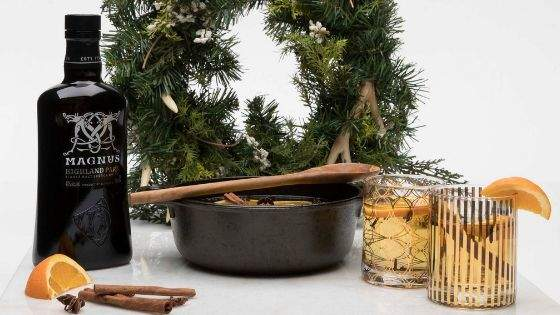

back to Home
Viking Glogg

Description
In many parts of Scandinavia, Glogg is a beverage served like a spiced mulled beverage
It's typically served during the winter months, specifically at Christmas time.
Ingredients for Glogg
- 1 L Apple Juice
- 1.5 cup Highland Park Magnus Single Malt Whiskey
- 4 tbsp Dark Brown Sugar
- 3 Orange Wheels
- 6 Cinnamon Sticks
- 2 tbsp Golden Raisins
- 2 tbsp Slivered Blanched Almonds
- 2 tbsp Fresh Grated Ginger
- 2 tbsp Cloves
- 2 tbsp Star Anise
- 2 tbsp Allspice
- 2 tbsp Black Peppercorns
Ingredients for Glogg Fruit Mix
- 3 oz Highland Park Magnus Single Malt Whiskey
- 2 tbsp Slivered Blanched Almonds
- 2 tbsp Golden Raisins
Instructions
- Pre-Step: You can make the fruit mix before you make the glogg as you want to give the raisins and nuts a bit of time to soak up the whiskey.
- Simply measure the ingredients, put them in a small bowl, and let them soak for a bit.
- Bring all Glogg ingredients – except the whiskey- to a low boil for 15 minutes to bring out the flavor of the spices.
- Strain.
- Add the whiskey after the temperature has cooled below 172 degrees Fahrenheit.
- Alcohol evaporates at 172 degrees, so if you want it boozy, you want to do this step.
- If you’re just using the whiskey for flavor, it’s okay to let it warm up with the rest of the ingredients.
- Serve with a scoop of Glogg Fruit Mix.